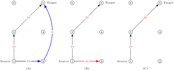

All information flows over some sort of network, whether it be electronic or otherwise; you can think of communicating person-to-person as a pair of nodes and a regular graph edge connecting them, while a person lecturing to a group might be modeled more accurately by a hypergraph 2 . Similarly, the logistic problem of transporting goods and services across the country can be modeled using a transportation network.
In both of these cases, there is a sort of maximum capacity for the transfer, and this gives us the concept of a capacitated network. This is much like a weighted graph, but we tend to think of networks as directed. Additionally we must consider that not ever connection in a network can be utilized to its full capacity at all times; hence we have two numbers associated with each edge, the flow and the capacity.
A capacitated network also has two special vertices: the source, \(s\text{,}\) and target (or sink), \(t\text{.}\) The flow begins form the source and terminates at the sink — a flow is valid if and only if the flow into each vertex is equal to the flow out of the vertex, with exceptions at \(s\) and \(t\text{,}\) and the flow across each directed edge is less than or equal to the capacity of that edge.
Subsection6.4.1Max flow
In nearly every application, the desire is to maximize the flow from \(s\) to \(t\) across the network; since what is flowing across most networks is not a physical fluid, the problem of maximizing flow is discrete-mathematical rather than a problem of physics solved by differential equations.
Definition6.4.1.
Suppose \(\Delta = (V,E,s,t)\) is a directed graph with source vertex \(s\) and target vertex \(t\text{.}\) A capacity function \(c:E\to\Reals^+\) for \(\Delta\) is the maximum amount of flow which can pass across an edge; this is denoted \(c(u,v)\) for the directed edge \(uv\in E\text{.}\) A flow function \(f:E\to \Reals^+\) for \(\Delta\) is a function satisfying the following two constraints:
(Capacity Constraint) \(f(u,v) \leq c(u,v)\) for all \(uv\in E\text{,}\) and
(Conservation of Flow) for each \(v\in V\setminus\set{s,t}\text{,}\)
Generally, we wish to maximize the value \(\abs{f}\) over all possible flows.
Definition6.4.2.
Suppose \(\Delta = (V,E,c,s,t)\) is a capacitated network with source \(s\) and target \(t\text{.}\) An \(s-t cut\) is a partition \(C=(S,T)\) such that \(s\in S\) and \(t\in T\text{.}\) The cut-set of \(C\) is the set of edges \(\set{uv\in E:u\in S, v\in T}\text{.}\) We notice that if a flow of \(0\) is put on all edges in the cur-set of \(C\text{,}\) then \(\abs{f}=0\text{.}\) The capacity of the cut \(C=(S,T)\) is
Just as it is interesting to determine a maximum flow over a network, there are applications when finding a minimum-capacity cut-set is desirable.
Theorem6.4.3.Max-flow Min-cut Theorem.
The maximum value of a \(s\text{-}t\) flow is equal to the minimum capacity of an \(s\text{-}t\) cut.
Subsection6.4.2Dinitz' Algorithm
The original solution to the problem of calculating a maximum flow was published in 1956 by L. R. Ford, Jr. and D. R. Fulkerson. The modified version presented here was produced by Yefim Dinitz as a “response to a pre-class exercise in (Georg) Adel'son-Vel'sky's Algorithm class.” According to Dinitz, he was at the time unaware of the basic details of the Ford-Fulkerson algorithm upon which his algorithm improves.
Both algorithms proceed in this general fashion: given a flow, determine which edges have residual capacity. In the residual graph, try to find a flow which can augment the current flow. When no such flow can be found, a maximum flow has been found.
The foremost reason an improvement was needed to the Ford-Fulkerson algorithm is its failure to terminate in certain cases of networks with irrational capacities. As the algorithm is successful in constructing a maximum flow whenever it terminates, an improvement to the algorithm was more likely than a replacement. Dinitz' improvement utilized shortest paths to overcome the conceptual flaw in Ford-Fulkerson during the step of finding an augmenting path. Hence we will first discuss the modification to Dikstra's algorithm which produces the necessary shortest path graph.
The modification to Dijkstra's algorithm to construct a subgraph consisting of all shortest paths from \(s\) to \(t\) is conceptually deep but easy to implement. Suppose \(v\in V\) with \(\dist{\Delta_f}{s}{v}=k\text{,}\) where \(s\) is the source vertex. Rather than recording a single \(s,v\)-path, we records every vertex \(u\in V\) such that \(\dist{\Delta_f}{s}{u}=k-1\) and there is an arc 3  from \(u\) to \(v\text{.}\)
Algorithm6.4.4.Modified Dikstra: All Shortest Paths from \(s\).
Suppose that \(\Delta_f=(V,E_f,c_f,s,t)\) is a capacitated network with source vertex \(s\) and target vertex \(t\text{.}\)
Initialize the distance and predecessor functions,
For each \(v\in V\setminus V'\) such that \(uv\in E_f\text{,}\)\(\dist{\Delta_f}{s}{u}+1\leq \dist{\Delta_f}{s}{v}\text{,}\) and \(c_f(u,v)>0\text{:}\)
update the distance to \(v\) by setting \(\dist{\Delta_f}{s}{v}=\dist{\Delta_f}{s}{u}+1\text{,}\) and
update the set of predecessors of \(v\text{,}\)\(p(v)\text{,}\) to include \(u\text{.}\)
Add \(u\) to \(V'\text{.}\)
Return the values of \(\dist{\Delta_f}{s}{v}\) and \(p(v)\) for each \(v\in V\text{.}\)
The true improvement of Dinitz' algorithm over the earlier Ford-Fulkerson algorithm is not in its use of this shortest path algorithm once, but twice: if the output \(p(v)\) is used to define a new set of arrows \(E_b=\set{uv:v\in p(u)}\) we can use the modified shortest path algorithm now on the graph with edge set \(E_b\) and source \(t\) to ensure that the only shortest paths we retain are \(s,t\)-paths.
Example6.4.5.Applying Dinitz' algorithm.
Figure6.4.6.(A) A capacitated network, \(\Delta=(V,E,c,v_1,v_5)\text{;}\) (B) the result \(\Delta'\) of applying Algorithm 6.4.4 on \(\Delta\text{;}\) (C) the “layered graph” \(\Lambda=(V,E_\ell,c_\ell,v_1,v_5)\) resulting from the application of Algorithm 6.4.4 on \(\Delta'\text{.}\)
The graph in (A) is a capacitated network \(\Delta=(V,E,c,s,t)\) with \(V=\set{v_1,v_2,\ldots,v_6}\text{;}\) only the indices of vertices are shown in the figure. Suppose we wish to apply Dijkstra's algorithm to this graph rooted at \(v_1\text{.}\) The neighbors of \(v_1\) are \(N(v_1)=\set{v_2,v_3}\text{;}\) visiting each of these in turn we see that the neighbors of \(v_2\) are \(N(v_2)=\set{v_3,v_4,v_5}\text{;}\) however, \(\dist{\Delta}{v_1}{v_3}=1\lt 2=\dist{\Delta}{v_1}{v_2}+1\text{,}\) so we do not update the predecessors of \(v_3\text{.}\) Likewise, \(N(v_3) = \set{v_4,v_5,v_6}\text{.}\) As this provides new paths of the same length to both \(v_4\) and \(v_5\text{,}\) we add \(v_3\) as a predecessor of each of those vertices.
Recalling that the modified Dijkstra's algorithm provides a sort of “predecessor graph”, we have obtained the capacitated network shown in the figure as (B). The second step of producing the layered data structure is to apply Dijkstra's algorithm on this intermediate graph, rooted now at the target vertex \(v_5\text{.}\) As the graph is directed, we see that vertices \(v_4\) and \(v_6\) are unreachable in the intermediate graph when rooted at \(v_5\text{;}\) hence the resulting layered graph of the figure labelled (C) has vertex \(v_1\) at distance \(0\text{,}\) vertices \(v_2\) and \(v_3\) at distance \(1\text{,}\) and vertex \(v_5\) at distance \(2\text{.}\)
It is important to make a note about the structure of \(\Lambda = (V,E_\ell,c_\ell,s,t)\) produced from two successive applications of Algorithm 6.4.4. We first produced \(\Delta'\) from \(\Delta\) by including the reverse edges of exactly those edges lying on shortest paths emanating from \(s\text{;}\) we then construct \(\Lambda\) from \(\Delta'\) by including only those edges on shortest paths terminating at \(t\text{.}\) Hence every path in \(\Lambda\) beginning at \(s\) will terminate at \(t\) and will be a shortest such path. This structure must be maintained as we augment the flow across the network, for two reasons: as edges become saturated 4  they must be removed from the residual capacity graph, just as residual capacities of unsaturated edges must be decreased. When saturated edges are removed, this can result in a vertex with no successors or with no predecessors, and both of these types of vertex lie on no \(s,t\)-path in \(\Lambda\text{.}\)
The graph \(\Lambda\) is referred to as a layered structure since we can think of the vertices as lying in distance layers away from \(s\) such that any edge \(uv\in E_\ell\) has the property \(\dist{\Delta_f}{s}{v}=\dist{\Delta_f}{s}{u}+1\text{.}\) Thus maintaining those layers means we need no special algorithm to find augmenting paths: any path emanating from \(s\) in a well-maintained layered graph will eventually terminate at \(t\text{.}\) The order in which paths are followed can change the final assignment of flow to edges, but interestingly cannot change the total final value of the flow. The flow assigned along the path is the minimum residual capacity along any edge of the path.
Algorithm6.4.7.Pathfinding.
Suppose \(\Lambda = (V,E_\ell,c_\ell,s,t)\) is the result of two applications of Algorithm 6.4.4 on a capacitated network \(\Delta=(V,E,c,s,t)\text{.}\)
Let \(u_0=s\text{.}\)
Inductively choose \(u_{i+1}\) for \(i\geq 0\) such that \(u_iu_{i+1}\in E_\ell\text{,}\) until \(u_n=t\text{.}\)
Let \(f^* = \min\set{c_\ell(u_i,u_{i+1}):i=1,2,\ldots,n-1}\text{.}\)
The augmenting path to be returned is the path \((u_0,u_1,u_2,\ldots,u_n)\) and the augmenting flow is \(f^*\) on each of those edges.
Example6.4.8.Continued from previous example..

Figure6.4.9.(A) An augmenting path with flow value \(f^*=8\) in \(\Lambda\) from Example 6.4.5. (B) After updating the residual capacities of edges in \(E_\ell\text{,}\) the edge \(v_2v_5\) was saturated and therefore removed. This leaves \(v_2\) with no successor vertices, so the edge \(v_1v_2\) (shown with reduced capacity) must also be removed as no additional flow can move from \(v_1\) to \(v_5\) along \(v_1v_2\text{.}\) (C) The graph \(\Lambda\) after maintenance.
In our graph \(\Lambda\text{,}\)\(u_0=s=v_1\) has only two successors: \(v_2\) and \(v_3\text{.}\) Choosing \(u_1=v_2\text{,}\) we see that the only successor of \(u_1\) in \(\Lambda\) is \(v_5=t\text{,}\) so \(u_2=v_5\text{.}\) Our augmenting path is then \((v_1,v_2,v_5)\text{;}\) as this flow only consists of two edges of capacities \(50\) and \(8\) respectively, it is clear that \(f^*=\min\set{50,8}=8\text{.}\)
The current flow in our graph is \(f(u,v)=0\) for all \(uv\in E\text{,}\) and we now have an augmenting path and flow. So we update the flow value to accommodate the augmentation:
We update our residual capacities and see that edge \(v_2v_5\) is now saturated; removing this edge from \(E_\ell\) we find that now \(v_2\) has no successors and so all edges terminating at \(v_2\) must also be removed in graph maintenance.
Having maintained the graph, we see that the path \((v_1,v_3,v_5)\) remains and permits another augmenting flow of \(f^*=10\text{.}\) Again updating, we have
Now no augmenting flows remain in \(\Lambda\) after maintenance, as \(v_1v_3\) is saturated and hence \(v_3\) has no predecessors in \(\Lambda\text{.}\)
In order to continue to augment the flow, we must again determine the residual capacities and build a new residual graph \(\Delta_f\) taking into account the current flow \(f\text{.}\)
Remark6.4.10.
About graph maintenance: there are several different ways that this can be handled, all with the same result but different in individual process. Dinitz originally kept track of the endpoints of edges which became saturated as the algorithm updated the residual capacities along an augmenting path. After these capacities were updated, the algorithm processed through lists of vertices which might have been left with either no successors or no predecessors. In our implementation, we opt for a recursive solution: when an edge \(uv\in E_\ell\) becomes saturated, we call a process Clean-to-source on its head vertex \(u\) and then a process Clean-to-Target on its tail vertex \(v\text{.}\) These two processes behave similarly, but in opposite directions. The first, Clean-to-source, determines whether \(u\) has any successors; if not, Clean-to-source is run on each predecessor \(w\) of \(u\text{.}\) Likewise Clean-to-Target checks whether \(v\) has any predecessors, and if not, Clean-to-Target is run on each successor \(w\) of \(v\text{.}\)
Algorithm6.4.11.Maintenance of layered graph.
Suppose \(\Lambda = (V,E_\ell,c_\ell,s,t)\) is the layered graph structure output from two successive applications of Algorithm 6.4.4, that \(P=\set{s=u_0,u_1,\ldots,u_{n-1},u_n=t}\) is an augmenting path with augmenting flow value \(f^*\text{.}\)
For each \(i\in\set{0,1,2,\ldots,n-1}\text{,}\) update \(c_\ell(u_i,u_{i+1})\) by subtracting from it the value \(f^*\text{.}\)
For an edge \(uv\in E_\ell\) where after updating, \(c_\ell(u,v)=0\text{,}\) do the following:
Clean-to-source from a vertex \(u\).
The vertex \(u\) has no successors in \(\Lambda\) precisely when
If \(u\) has no successors and is not the source vertex \(s\text{,}\) consider the set \({P=\set{w\in V:c_\ell(w,u)>0}}\) of predecessors of \(u\text{.}\)
For each \(w\in P\text{,}\) set \(c_\ell(w,u)=0\text{.}\) For each \(w\in P\) with no successors other than \(u\text{,}\)clean-to-source from the vertex \(w\).
Clean-to-target from a vertex \(v\).
The vertex \(v\) has no predecessors in \(\Lambda\) precisely when
If \(v\) has no sucessors and is not the target vertex \(t\text{,}\) consider the set \(S=\set{w\in V:c_\ell(v,w)>0}\) of successors of \(v\text{.}\)
For each \(w\in S\text{,}\) set \(c_\ell(v,w)=0\text{.}\) For each \(w\in S\) with no predecessors other than \(v\text{,}\)clean-to-target from the vertex \(w\).
After both cleaning processes have finished for all saturated edges, remove from \(E_\ell\) any edge \(uv\) with \(c_\ell(u,v)=0\text{.}\)
We now have all the pieces in place to actually state Dinitz' algorithm.
Algorithm6.4.12.Dinitz' Max Flow Algorithm.
Suppose we are given a capacitated network \(\Delta = (V,E,c,s,t)\) with capacity function \(c:E\to\Reals^+\text{,}\) source \(s\text{,}\) and target \(t\text{.}\)
Define the initial flow \(f(u,v)=0\) for \(uv\in E\) or \(vu\in E\text{.}\)
Repeat the following:
Calculate the residual capacity function\(c_f:V\times V\to \Reals^+\text{,}\) given by:
\begin{equation*}
c_f(u,v) = \begin{cases}c(u,v) - f(u,v), \amp uv\in E \\
f(u,v), \amp vu\in E
\end{cases} .
\end{equation*}
We remark that a positive flow of \(f(u,v)\) provides exactly that much capacity to the reverse edge \(vu\text{.}\)
Let \(\Delta_f=(V,E_f,c_f,s,t)\) be the residual graph with
Apply Algorithm 6.4.4 to \(\Delta\) to produce \(\Delta'\text{;}\) apply Algorithm 6.4.4 again to \(\Delta'\) to obtain the layered graph \(\Lambda = (V,E_\ell,c_\ell,s,t)\text{.}\)When no shortest paths from \(s\) to \(t\) are found in constructing \(\Delta'\text{,}\) the flow is optimal.
Repeat the following:
Use Algorithm 6.4.7 to find an augmenting path \(P\) with flow value \(f^*\) in \(\Lambda\text{.}\) If no augmenting path exists, return to step a.
Update \(f\) by adding \(f^*\) to the flow for each edge \(u_iu_{i+1}\) where \(u_i,u_{i+1}\) are adjacent vertices in \(P\text{.}\)
There are a number of algorithms which need to be separately implemented as functions in order for the Dinitz Maximum Flow algorithm to operate.
def all_shortest_paths(vertex_set, warrows, source):
# Note: float('inf') represents Infinity.
unvisited_distance = [(0,source)]
unvisited_distance += [(float('inf'), v) for v in vertex_set if v!=source]
distance = {v:d for d,v in unvisited_distance}
predecessor = {v:[] for v in vertex_set}
visited = [ ]
while len(visited) < len(vertex_set):
# find nearest unvisited vertex
unvisited_distance.sort()
du, u = unvisited_distance.pop(0)
for v, cap_uv in warrows[u].items():
if v in visited: continue
elif (du + 1 <= distance[v]) and (cap_uv > 0):
unvisited_distance.remove( (distance[v], v) )
distance[v] = du + 1
if u not in predecessor[v]:
predecessor[v].append( u )
unvisited_distance.append( (distance[v], v) )
visited.append( u )
return predecessor
Listing6.4.13.Implementation of Algorithm 6.4.4 returning the lists of predecessors of each vertex.
def build_back_arrows(vertex_set, warrows, predecessors):
back_arrows = {v:{} for v in vertex_set}
for u,pu in predecessors.items():
for v in pu:
try:
back_arrows[u][v] = warrows[v][u]
except KeyError:
back_arrows[u] = {v:warrows[v][u]}
return back_arrows
Listing6.4.14.A function which takes a dictionary of lists of predecessor vertices and a dictionary of arrows of a directed graph and returns the reversed arrows corresponding to the given predecessor relationships.
def predecessors(warrows:dict, vertex):
return [w for w,nbrs in warrows.items() if vertex in nbrs.keys() and warrows[w][vertex] > 0 ]
def successors(warrows:dict, vertex):
return [w for w,c in warrows[vertex].items() if c>0]
Listing6.4.16.Predecessor and successor functions for layered graph maintenance in Dinitz' algorithm
def clean_to_source(layered_cap, vertex, source):
if vertex!=source and len(successors(layered_cap, vertex)) == 0:
for w in predecessors(layered_cap, vertex):
layered_cap[w][vertex] = 0
if len(successors(layered_cap, w))==0:
layered_cap = clean_to_source(layered_cap, w, source)
return layered_cap
def clean_to_target(layered_cap, vertex, target):
if vertex!=target and len(predecessors(layered_cap, vertex))==0:
for w in successors(layered_cap, vertex):
layered_cap[vertex][w] = 0
if predecessors(layered_cap, w) in ([vertex], []):
layered_cap = clean_to_target(layered_cap, w, target)
return layered_cap
Listing6.4.17.Cleaning functions for layered graph maintenance in Dinitz' algorithm
def maintain_layers(layered_cap, aug_path, aug_flow, source, target):
pairs = zip(aug_path[:-1], aug_path[1:])
for u,v in pairs:
layered_cap[u][v] -= aug_flow
if layered_cap[u][v] == 0:
layered_cap = clean_to_source(layered_cap, u, source)
layered_cap = clean_to_target(layered_cap, v, target)
pruners = []
for u,nbrs in layered_cap.copy().items():
for v,c in nbrs.items():
if c==0:
pruners.append( (u,v) )
for u,v in pruners:
del layered_cap[u][v]
return layered_cap
Listing6.4.18.Layered graph maintenance in Dinitz' algorithm
def dinitz(vertex_set, capacity, source, target, debug=False):
cap_edges = [(u,v,c) for u,out_arrows in capacity.items() for v,c in out_arrows.items()]
# Initialize Zero Flow
total_flow = 0
flow = {u:{v:0 for v in out_arrows.keys()} for u,out_arrows in capacity.items()}
for u,v,c in cap_edges:
try:
flow[v][u] = 0
except:
flow[v] = {u:0}
while True:
# Create residual capacity
res_capacity = {u:{v:c-flow[u][v] for v,c in out_arrows.items()} for u,out_arrows in capacity.items()}
for u,v,c in cap_edges:
try:
res_capacity[v][u] = flow[u][v]
except KeyError:
res_capacity[v] = {u:flow[u][v]}
res_capacity = {u:{v:c for v,c in out_arrows.items() if c>0} for u,out_arrows in res_capacity.items()}
if debug: print(f"Residual Capacities computed:\n{res_capacity}")
# Create layered graph
pred = all_shortest_paths(vertex_set, res_capacity, source)
back_cap = build_back_arrows(vertex_set, res_capacity, pred)
pred = all_shortest_paths(vertex_set, back_cap, target)
layered_capacity = build_back_arrows(vertex_set, back_cap, pred)
if debug: print(f"Layered Graph computed:\n{layered_capacity}")
if layered_capacity[source] == {}:
print(f"Maximum flow of {total_flow} achieved.")
break
try:
# Repeatedly find augmenting paths
while True:
ap, af = pathfinding(layered_capacity, source, target)
if debug: print(f"Augmenting path {ap} of capacity {af} found.")
total_flow += af
for u,v in zip(ap[:-1],ap[1:]):
flow[u][v] += af
layered_capacity = maintain_layers(layered_capacity, ap, af, source, target)
if debug: print(f"After maintenance, layered graph is:\n{layered_capacity}")
except:
if debug: print(f"No more augmenting paths.")
continue
# prune empty flows
flow = {u:{v:f for v,f in flow_arrows.items() if f>0} for u,flow_arrows in flow.items()}
return flow
Listing6.4.19.Dinitz algorithm implemented in Python
Once you have all that code implemented, you can test it using a simple program.
verts = range(6)
cap = {0:{1:50, 2:10}, 1:{2:10, 3:5, 4: 8}, 2:{1:20, 3:10, 5:20, 4:20}, 3:{4:13}, 4:{}, 5:{4:20}}
s = 0
t = 4
print(dinitz(verts, cap, 0, 4, True))
Remember that a hypergraph permits edges to contain more than two vertices.
Recall that we are working over directed graphs now.
An edge \(uv\) is saturated when \(f(u,v)=c(u,v)\text{,}\) where \(f\) is the flow and \(c\) is the capacity.